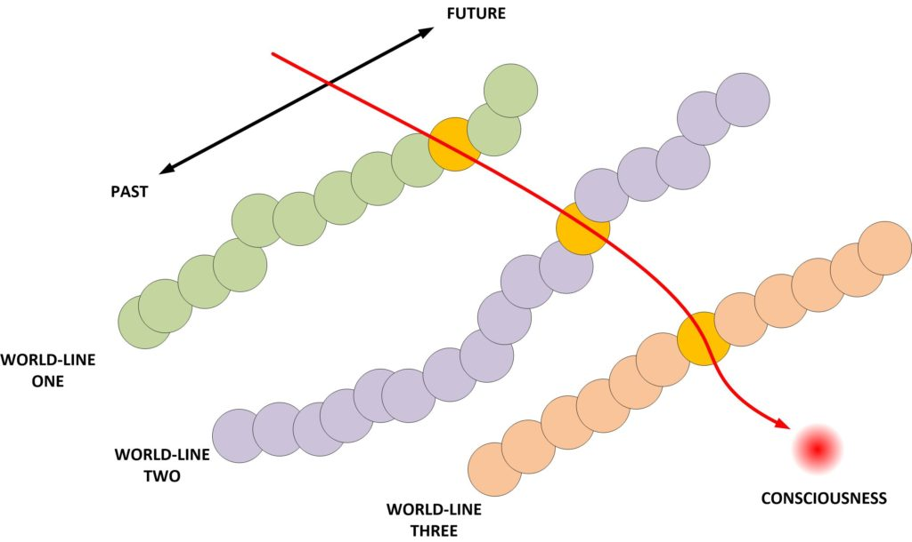
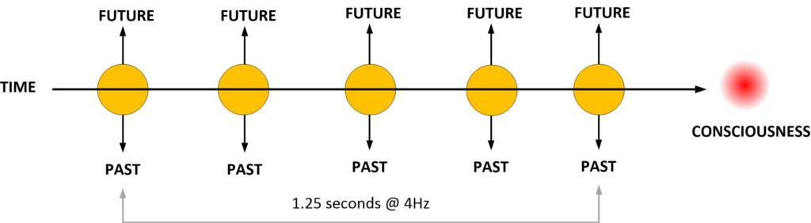
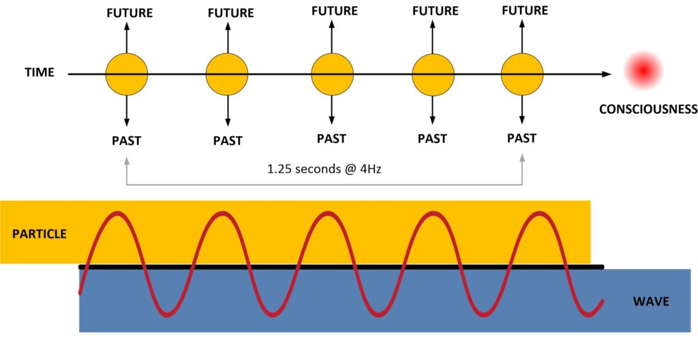
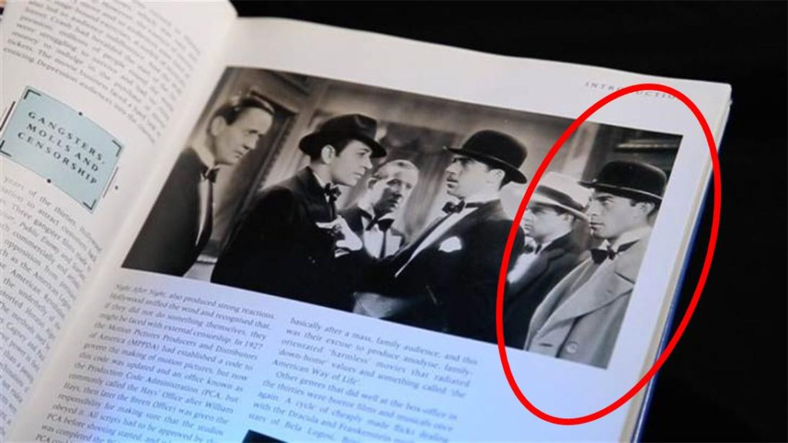
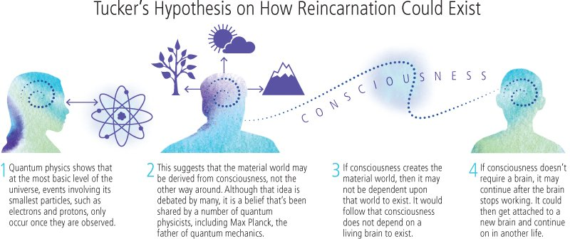
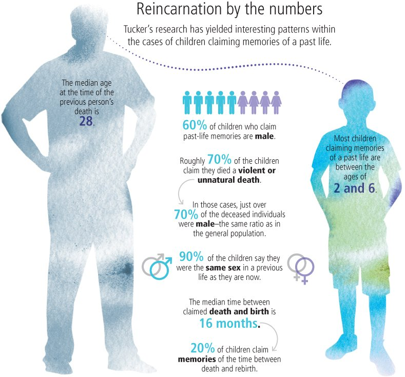

Here we talk about reincarnation.
As I have repeatedly stated throughout Metallicman, reincarnation is a natural part of our experience as consciousness. We enter and leave the physical realities at will, and it is fairly automatic. It’s really nothing to get all “hot and bothered” about. It’s a normal exercise in consciousness migration.
Let’s look at a normal day to day life.
We naturally cycle in and out of world-lines. We do it at about four Hz. or roughly four world-lines per second. And this movement
Essentially, it works like this, the consciousness constantly cycles in and out of world-lines. Each moment, each cycle, is a new world-line.
We see that, just as our consciousness observes it. We call it “time”.
Each world-line has it’s own future, and it’s own past. Which may or may not diverge from the pasts or (anticipated) futures of your previous experiences.
Sort of like this…

And here is how it appears from the point of view of the consciousness. In this next illustration we can see that (from the point of view of the consciousness) each moment in a world-line is a singular world-line with it’s own past, and it’s own future.
As shown here…

Now from a consciousness point of view, this is all very interesting.
When it is inside a world-line, it occupies a physical body. There it enters a “particle” phase. As such it is able to control and actuate the body that it inhabits.
Then, next, once it is outside of the world-line, it enters the “wave” phase and is thus freely moving in the non-physical realms (momentarily).
This cycling, I have covered it elsewhere, is in the form of a sine wave. And it looks a little something like this…

Thus, as is shown above, the consciousness MUST be in particle form for it to actuate a body within a given world line.
And, as such it MUST be in a wave form to move between different world-lines by traveling in the non-physical reality.
Now…
What happens when the physical body dies, and as such, it no longer can support a consciousness? What then?
What happens?
Well, for one thing, the consciousness is “stuck” in a wave form.
For it to continue getting experiences it must enter a world-line with an infant of value that…
- Is “empty” has no other consciousness associated with it.
- Has a future time and life line that will meet the objectives of the consciousness.
So it can either do one of two things.
- Stay in “wave form”.
- Enter a new infant body in “particle form”.
And thus we have the interesting tales of reincarnation events. As such, here are some very interesting examples of well-documented reincarnation events.
3-Year-Old Boy Remembers His Past Life, Locates His Body & Identifies The Man Who Murdered Him
Published on April 28, 2017 By Arjun Walia. Found HERE. Edited to fit in this venue, and all credit to the author.
Reincarnation has remained on the fringe of scientific inquiry for a long time, despite a number of scientists urging the mainstream community to research it further — and for good reason.
Decades ago, American astronomer and astrobiologist Carl Sagan said that
“there are three claims in the (parapsychology) field which, in my opinion, deserve serious study,”
with one being
“that young children sometimes report details of a previous life, which upon checking turn out to be accurate and which they could not have known about in any other way than reincarnation.”
This topic falls into the ever-growing study of non-material sciences.
At the end of the nineteenth century, physicists discovered something that could not be explained by classical physics. This led to the development of quantum mechanics.
And of course, quantum mechanics has now proven that the material foundations of our world are not the real foundations we think they are.
Quantum mechanic suddenly introduced the mind into its conceptual structure, because all of the results coming from quantum mechanics suggest that the physical world is no longer the primary or sole component of reality.
“Despite the unrivaled empirical success of quantum theory, the very suggestion that it may be literally true as a description of nature is still greeted with cynicism, incomprehension and even anger.” – T. Folger, “Quantum Shmantum”; Discover 22:37-43, 2001
The quote below is from Dr. Gary Schwartz, a professor of psychology, medicine, neurology, psychiatry, and surgery at the University of Arizona. He and a number of other sciences explain these concepts in their Manifesto for a Post-Materialist Science:
The ideology of scientific materialism became dominant in academia during the 20th century. So dominant that a majority of scientists started to believe that it was based on established empirical evidence, and represented the only rational view of the world. Scientific methods based upon materialistic philosophy have been highly successful in not only increasing our understanding of nature but also in bringing greater control and freedom through advances in technology. However, the nearly absolute dominance of materialism in the academic world has seriously constricted the sciences and hampered the development of the scientific study of mind and spirituality. Faith in this ideology, as an exclusive explanatory framework for reality, has compelled scientists to neglect the subjective dimension of human experience. This has led to a severely distorted and impoverished understanding of ourselves and our place in nature.
When it comes to reincarnation specifically, it directly relates to the study of consciousness — something that Max Plank regarded as “fundamental” in relation to quantum mechanics.
In fact, Eugene Wigner, another Nobel Prize winning scientist/mathematician, once told the world that
“it was not possible to formulate the laws of quantum mechanics without reference to consciousness.”
The Scientific Study of Reincarnation
University of Virginia psychiatrist Jim Tucker is arguably the world’s leading researcher on this topic, and in 2008, he published a review of cases that were suggestive of reincarnation in the journal Explore.
A typical reincarnation case, described by Jim, includes subjects reporting a past life experience. The interesting thing is that 100% of subjects who report past life remembrance are children.
The average age when they start remembering their past life is at 35 months, and their descriptions of events and experiences from their past life are often extensive and remarkably detailed.
Tucker has pointed out that these children show very strong emotional involvement when they speak about their experiences; some actually cry and beg their parents to be taken to what they say is their previous family.
According to Tucker,
“The subjects usually stop making their past-life statements by the age of six to seven, and most seem to lose the purported memories. This is the age when children start school and begin having more experiences in the current life, as well as when they tend to lose their early childhood memories.”
Roughly 70 percent of the children say they died violent or unexpected deaths in their previous life.
Males account for close to three-quarters of those deaths—almost precisely the same ratio of males who die of unnatural causes in the general population.
More cases are reported in countries where reincarnation is part of the religious culture, but Tucker says there is no correlation between how strong a case is deemed and that family’s beliefs in reincarnation.
One out of five children who report a past life say they recall the intermission, the time between death and birth, although there is no consistent view of what that’s like. Some allege they were in “God’s house,” while others claim they waited near where they died before “going inside” their mother.
In cases where a child’s story has been traced to another individual, the median time between the death of that person and the child’s birth is about 16 months.
Further research by Tucker and others has shown the children generally have above-average IQs and do not possess any mental or emotional disorders beyond average groups of children. None appears to have been dissociating from painful family situations.
Nearly 20 percent of the children studied have scarlike birthmarks or even unusual deformities that closely match marks or injuries the person whose life the child recalls received at or near his or her death.
Most children’s claims generally subside around age 6, coinciding roughly with what Tucker says is the time children’s brains ready themselves for a new stage of development.
This Case
This article, however, focuses on a different case. And it starts with a doctor named Eli Lasch, a prominent physician in Israel who served as a senior consultant in the coordination of health services in the Gaza Strip. He passed away in 2009, but before he did, he was investigating a supposed reincarnation case in which a three-year old boy claimed to have remembered a past life. In this life, he remembered being struck by a big blow to the head with an axe, and having a long, red birthmark on his head.
The present-day boy, whose name remained confidential throughout the entire study, also had a birthmark in the exact same spot, which is interesting because multiple studies, like the one published in Explore, point out how shared birthmarks are common to children who remember their past lives.
The boy’s father and a number of other relatives in the village decided to visit neighboring communities to see if his past life identity could be established and Dr. Lasch was invited to join. On this journey, they visited multiple villages until the boy remembered the right one. He remembered his own first and last name, as well as the first and last name of his murderer.
According to the Institute for the Integration of Science, Intuition, and Spirit. I am not able to retrieve the source, as it appears to have been removed, but I will leave the text here with another reference at the bottom of this quote.
A member of this community, who had heard the boy’s story, said that he had known the man that the boy said that he was in the past lifetime. This man had disappeared 4 years earlier and was never found. It was assumed that this person must have come to some misfortune as it was known that individuals were killed or taken prisoner in the border areas between Israel and Syria for being suspected of being spies.
The group went through the village and at one point the boy pointed out this past life house. Curious bystanders gathered around and suddenly the boy walked up to a man and called him by name. The man acknowledged that the boy correctly named him and the boy then said:
“I used to be your neighbor. We had a fight and you killed me with an ax.”
Dr. Lasch then observed that this man’s face suddenly became white as a sheet. The 3-year-old than stated:
“I even know where he buried my body.”
The boy then led the group, which included the accused murderer, into fields that were located nearby. The boy stopped in front of a pile of stones and reported:
“He buried my body under these stones and the ax over there.”
The boy’s full story has been documented in the book, “Children Who Have Lived Before: Reincarnation Today” by German therapist Trutz Hardo.
Excavation at the spot under the stones revealed the skeleton of an adult man wearing the clothes of a farmer, and on the skull, they observed a linear split consistent with an axe wound.
In 1998, Dr. Lasch related this case history to Trutz Hardo,.
6 Extraordinary Cases Of Kids Who Remember Their Past Lives
University of Virginia psychiatrist Jim Tucker is arguably the world’s leading researcher on this topic, and in 2008, he published a review of cases that were suggestive of reincarnation in the journal Explore.
A typical reincarnation case, described by Jim, includes subjects reporting a past life experience. The interesting thing is that 100 percent of subjects who report past life remembrance are children.
The average age when they start remembering their past life is at 35 months, and their descriptions of events and experiences from their past life are often extensive and remarkably detailed. Tucker has pointed out that these children show very strong emotional involvement when they speak about their experiences; some actually cry and beg their parents to be taken to what they say is their previous family.
According to Tucker:
The subjects usually stop making their past-life statements by the age of six to seven, and most seem to lose the purported memories. This is the age when children start school and begin having more experiences in the current life, as well as when they tend to lose their early childhood memories.
Sam Taylor
Sam Taylor is one child Tucker studied and wrote about. Born 18 months after his paternal grandfather died, he first began recalling details of a past life when he was just over a year old:
When he was 1.5 years old, he looked up as his father was changing his diaper and said, “When I was your age, I used to change your diapers.” He began talking more about having been his grandfather. He eventually told details of his grandfather’s life that his parents felt certain he could not have learned through normal means, such as the fact that his grandfather’s sister had been murdered and that his grandmother had used a food processor to make milkshakes for his grandfather every day at the end of his life.(source)
Pretty remarkable, isn’t it?
A Midwestern Toddler Recalls Writing Gone With The Wind
From the time he was two years old, a Midwestern child named Lee insisted he had another house and another mommy. By the age of three, he began saying he was born on June 26 rather than his actual birthday, June 21. Lee claimed his middle name was Coe, he wrote movies for a living, and had a daughter named Jennifer. His sister asked him how old he was when he died and he promptly replied, “Forty-eight.”
Lee’s curious parents relayed the titles of several movies to Lee, asking if he had written them. When they mentioned Gone With the Wind, Lee became enthusiastic. He eagerly claimed he wrote the film.
After a quick Google search, Lee’s parents learned the writer of Gone With the Wind was named Sidney Coe Howard. Howard was born June 26, had a daughter named Jennifer, and passed away at forty-eight. As these details of Coe’s life were unknown to Lee’s parents, it’s unclear how he knew them. This leaves reincarnation as a possible explanation.
A Six Year Old Claimed To Be The Reincarnation Of Nearby Family Man
At the age of one-and-a-half, Nazih Al-Danaf of Lebanon shocked his parents. He declared, “I am not small, I am big.” He insisted he had many weapons, including grenades, and lived in a nearby village.
As time went on, Al-Danaf continually requested to be taken to his old home in Qaberchamoun, about 10 miles away from his village. When he was six years old, his parents granted this request and Al-Danaf located Najdiyah Khaddage’s home. Khaddage spoke with Al-Danaf at length and became convinced he was the reincarnation of her husband, Fuad Assad Khaddage. She was astounded when Al-Danaf answered her questions correctly. He remembered who built the foundation of their home, the specifics of an accident when she dislocated her shoulder, and an incident when their daughter became ill by ingesting medicine.
Even more astonishing? When Al-Danaf’s alleged former wife invited him into her home, he quickly ran to a cupboard in search of his weapons. This was the exact cupboard where her deceased husband had kept his guns and grenades.
Ryan – A Boy From The Midwest
When Ryan Hammons was 4 years old, he began directing imaginary movies. Shouts of “Action!” often echoed from his room. But the play became a concern for Ryan’s parents when he began waking up in the middle of the night screaming and clutching his chest, saying he dreamed his heart exploded when he was in Hollywood. His mother, Cyndi, asked his doctor about the episodes. Night terrors, the doctor said. He’ll outgrow them. Then one night, as Cyndi tucked Ryan into bed, Ryan suddenly took hold of Cyndi’s hand. “Mama,” he said. “I think I used to be someone else.” He said he remembered a big white house and a swimming pool. It was in Hollywood, many miles from his Oklahoma home. He said he had three sons, but that he couldn’t remember their names. He began to cry, asking Cyndi over and over why he couldn’t remember their names. “I really didn’t know what to do,” Cyndi said. “I was more in shock than anything. He was so insistent about it. After that night, he kept talking about it, kept getting upset about not being able to remember those names. I started researching the Internet about reincarnation. I even got some books from the library on Hollywood, thinking their pictures might help him. I didn’t tell anyone for months.” One day, as Ryan and Cyndi paged through one of the Hollywood books, Ryan stopped at a black-and-white still taken from a 1930s movie, Night After Night. Two men in the center of the picture were confronting one another. Four other men surrounded them. Cyndi didn’t recognize any of the faces, but Ryan pointed to one of the men in the middle. “Hey Mama,” he said. “That’s George. We did a picture together.” His finger then shot over to a man on the right, wearing an overcoat and a scowl. “That guy’s me. I found me!” -UVA Magazine
Ryan’s story began when he was 4 years old, when he was experiencing frequent, horrible nightmares. Once he turned five, he made an announcement to his mother. He told her,
“I used to be somebody else.”
He would often talk about “going home” to Hollywood and would beg his mother to take him there. He told her detailed stories about meeting stars like Rita Hayworth, dancing in Broadway productions, and working for an agency where people would frequently change their names. He even remembered that the name of the street he used to live on had the word “rock” in it.
Ryan’s mother Cyndi said that
“his stories were so detailed and they were so extensive, that it just wasn’t like a child could have made it up.”
Cyndi decided to check out some books about Hollywood from her local library, thinking that maybe something inside would catch her son’s attention, and it did.
Cyndi said that once she found the below picture — of the man Ryan claims to have been in his past life — everything changed.

They decided to seek Tucker’s help, who took on the case and started his research.
After only approximately two weeks, a Hollywood film archivist was able to confirm the identity of the man in the photo. The picture was from a film titled “Night After Night,” and the man was Marty Martyn, who had been a movie extra and then later became a powerful Hollywood agent before passing away in 1964.
The book didn’t provide any names of the actors pictured, but Cyndi quickly confirmed that the man Ryan said was “George" in the photo was indeed a George—George Raft, an all but forgotten film star from the 1930s and 1940s. Still, she couldn’t identify the man Ryan said had been him.Cyndi wrote Tucker, whom she found through her online research, and included the photo. Eventually it ended up in the hands of a film archivist, who, after weeks of research, confirmed the scowling man’s name: Martin Martyn, an uncredited extra in the film. Tucker hadn’t shared that discovery with the Hammons family when he traveled to their home a few weeks later. Instead, he laid out black-and-white photos of four women on the kitchen table. Three of them were random. Tucker asked Ryan, “Do any of these mean anything to you?” Ryan studied the pictures. He pointed to one. She looks familiar, he said. It was Martin Martyn’s wife.
Martyn had in fact danced on Broadway, worked at an agency where stage names were often created for new clients, traveled overseas to Paris, and lived at 825 North Roxbury Drive in Beverly Hills.
These were all details that Ryan was able to communicate to Tucker before they learned the identity of who he described; for example, Ryan knew that the address had “Rox” in it.
Ryan was also able to recall how many children Martyn had and how many times he was married.
More remarkable still is the fact that Ryan knew Martyn had two sisters, but Martyn’s own daughter did not.
Ryan also remembers an African-American maid; Marty and his wife employed several. These are just a few of 55 incredible facts that Ryan can remember from his previous life as Marty Martyn, though as he ages, his memories become increasingly dim.
The meeting later between Ryan and Martyn’s daughter didn’t go well. Ryan shook her hand then hid behind Cyndi for the rest of the time. Later he told his mother the woman’s “energy” had changed. Cyndi explained that people change when they grow up.
“I don’t want to go back [to Hollywood],”
Ryan said.
“I always want to keep this family.”
In the weeks that followed, Ryan spoke less about Hollywood. Tucker says that often happens when children meet the family of someone they claimed to have been. It seems to validate their memories, making them less intense.
“I think they see that no one is waiting for them in the past,”
Tucker says.
“Some of them get sad about it, but ultimately they accept it and they turn their attention more fully to the present. They get more involved in experiencing this life, which, of course, is what they should do.”
A Child’s Birth Marks Match A Bicyclist’s Deadly Injuries
Purnima Ekanayake of Sri Lanka was born with unusual birthmarks dotting her lower ribs and chest. At a young age, she began speaking of a past life. After a school trip to a temple 145 miles away, Ekanayake insisted she lived in the town across the river from the temple. She claimed she was once a male incense maker who died in a traffic accident.
Ekanayake’s father traveled with his brother-in-law to the town in question, Kelaniya. They asked around about local incense makers and found the name Jinadasa. Jinadasa had been an incense maker who died when he was hit by a bus while riding his bicycle. Ekanayake’s family took her to Jinadasa’s home, where she was able to identify his wife and daughter and name the school Jinadasa attended.
Ekanayake’s family had no prior contact or connections with Jinadasa’s family. It is difficult to explain how she got such specific information correct. Then, there were the birthmarks. Jinadasa’s autopsy report showed several fractures and bruises from the accident that ran along his lower ribs and left side.
An Elderly Man Shocked Archaeologists With His Knowledge Of An Ancient City
For his entire life, Arthur Flowerdew was haunted with inexplicable and vivid memories of a city surrounded by a desert and a temple carved into a cliff. One day, while watching a BBC documentary on television, he saw the city of Petra, Jordan. To his amazement, the city matched the one in his head.
After Flowerdew shared his story with several people, BBC reporters contacted him asking to put his story on television. Several archeologists flew to Petra with Flowerdew. He recognized landmarks with ease, including sites that had not been excavated yet. When presented with an ancient device, the purpose of which had baffled scholars for years, he offered a plausible explanation regarding its use. After seeing a guard station, Flowerdew recalled that he had died there when he was stabbed with a spear.
The experts who accompanied Flowerdew believed his claims of reincarnation, doubting someone would be able to fake or fabricate the breadth of knowledge he displayed. Flowerdew maintained he had never studied the city previously and only heard of it upon seeing it on television. While Flowerdew could possibly have withheld information regarding his education, many believe this is a true reincarnation story.
A Retired Fire Chief Felt An Emotional Link To A Civil War General
When retired fire chief Jeffrey Keene and his wife vacationed in Maryland, he was caught off guard when visiting a Civil War battlefield called Sunken Road. Keene became inexplicably emotional as he entered the field, to the point he thought he may be suffering a heart attack. While the physical pain passed, he felt an uncanny connection to the area.
Later, he recounted the incident to a psychic at a party. She asked if he believed in reincarnation. He felt the instinctive urge to say the words, “Not yet.”
While reading a Civil War magazine in his home, he found an article about a Civil War general identified as General Gordon. Gordon had fought in Sunken Road during the Battle of Antietam. During this battle, he was best remembered for repetitively shouting the words, “Not yet.”
Upon researching Gordon’s life, Keene found more connections between himself and Gordon. Keene had marks on this body similar to wounds Gordon suffered in war. On Keen’s 30th birthday, he was emitted to the hospital with a terrible pain in his jaw. When Gordon was 30, he was shot in the face.
Swedish Woman Claims To Be The Reincarnation Of Anne Frank
Barbro Karlén was born in Sweden in 1954. From the time she could talk, Karlén began telling her parents strange stories about someone named Anne Frank. Karlén claimed she was Anne Frank, that she had nightmares of men kicking in the door of her home and taking her away.
Her parents were perplexed, not least because they had no idea Anne Frank was a real person. Frank died in 1945 in the Bergen-Belsen concentration camp after Nazis discovered her and her family hiding in an attic in Amsterdam. They were trying to avoid persecution for being Jewish.
Karlén’s parents took her to Amsterdam when she was 10 years old. She quickly led them to Frank’s house with no directions, correctly identified a spot on the wall where Frank had hung photos of movie stars, and noted that the steps were different than she remembered them. All of this was enough to finally make her parents believe she really was the reincarnation of Anne Frank, and she’s been writing books about her experience ever since.
Chanai Choomalaiwong
Chanai is a boy from Thailand, who, when he was three years old, began saying that he had been a teacher named Bua Kai who had been shot and killed as he rode his bike to school.
He pleaded and begged to be taken to Bua Kai’s parents, who he felt were his own parents.
He knew the village where they lived, and eventually convinced his grandmother to take him there.
According to the research:
His grandmother reported that after they got off the bus, Chanai led her to a house where an older couple lived. Chanai appeared to recognize the couple, who were the parents of Bua Kai Lawnak, a teacher who had been shot and killed on the way to school five years before Chanai was born.
The fascinating thing is that Kai and Chanai had something in common.
Kai, who was shot from behind, had small, round wounds on the back of his head, typical of an entry wound, and larger exit wounds on his forehead; Chanai was born with two birthmarks, a small, round birthmark on the back of his head, and a larger, irregularly shaped one towards the front.
The Case of P.M
P.M was a boy whose half brother had died from neuroblastoma 12 years before his birth.
The half brother was diagnosed after he began limping, and then suffered a pathological fracture on his left tibia. He underwent a biopsy of a nodule on his scalp, just above his right ear, and received chemotherapy through a central line in his right external jugular vein. At the time of his death he was two years old, and blind in his left eye.
P.M was born with three birthmarks that match the lesions on his half brother, as well as with a swelling 1cm in diameter above his right ear and a dark, slanting mark on the lower right anterior surface of his neck.
He also had what’s known as a ‘corneal leukoma,’ which caused him to be virtually blind in his left eye.
As soon as P.M. started to walk, he did so with a limp, sparing his left side, and at around the age of 4.5 years he spoke to his mother about wanting to return to the family’s previous home, describing it with great accuracy. He also spoke of his brother’s scalp surgery even though he had never been told of it before.
Two Sisters Killed In A Car Accident Were Reincarnated As Twins
John and Florence Pollock were devastated when their twin daughters, Joanna and Jacqueline, died in a car accident on May 5, 1957. The following year, they were thrilled to hear they were expecting and, once again, Florence was carrying twins. The twins, Gillian and Jennifer, were born identical except for Jennifer’s birthmarks. She had a birthmark on her waist, similar to a birthmark Jacqueline had, and a birthmark on her forehead that resembled one of Jacqueline’s scars.
John and Florence moved away from their old home when their daughters were three months old. John and Florence told Gillian and Jennifer very little about their late sisters, but the girls seemed to share Joanna and Jacqueline’s memories. They would request old toys that had belonged to the deceased twins, recognized landmarks when traveling to their parents’ former home, and were inexplicably terrified of cars. Upon seeing oncoming traffic, they would shriek, “The car is coming to get us!”
Luckily, by the age of five, these frightening memories mostly faded away. The girls went on to live relatively normal adult lives. However, their story is still frequently cited as evidence of reincarnation.
Kendra Carter
When Kendra began swimming lessons at the age of 4, she immediately developed an emotional attachment to her coach.
Shortly after she started her lessons, she began saying that the coach’s baby had died and that the coach had been sick and pushed her baby out.
Kendra’s mother was always at her lessons, and when she asked Kendra how she knew these things, her reply was,
“I’m the baby that was in her tummy.”
Kendra went on to describe an abortion, and her mother later found out that the coach had indeed had an abortion 9 years before Kendra was even born:
Kendra became happy and bubbly when she was with the coach but quiet otherwise, and her mother let her spend more and more time with the coach until she was staying with her three nights a week. Eventually, the coach had a falling out with Kendra’s mother and cut off contact with the family. Kendra then went into a depression and did not speak for 4.5 months. The coach reestablished more limited contact at that point, and Kendra slowly began talking again and participating in activities. (source)
A Chicago Fire Victim Was Reincarnated As A Five-Year-Old Boy
At first, Erica Ruehlman laughed off her five-year-old son Luke’s odd tendency to call toys and objects “Pam.” She was also unconcerned by his comments about having once been a girl. He would say he had black hair when he was a girl, or that he wore the same earrings as his mom when he was a girl. Out of curiosity, Erica eventually asked Luke who Pam was.
“I was,” he said, “Well, I used to be, but I died and I went up to heaven. I saw God and then, eventually, God pushed me back down and when I woke up I was a baby and you named me Luke.”
After pressing him for more details, Luke told his mother he lived in Chicago, took the train a lot, and died in a fire. After mentioning his death, Luke made a hand motion indicating someone jumping out a window. When Erica punched the information into a search engine, she discovered a news story about a fire in the Paxton Hotel in Chicago. In March of 1993, 19 people died in a fire at the building and a woman, Pam Robinson, perished when she jumped out a window.
Erica couldn’t explain how Luke would have known about a fire in Chicago. He had never been to the city, and she never discussed it with him. While the haunting story of Pam Robinson could be a coincidence, it was enough to make Erica believe.
James Leininger
At the time of this case, James was a 4 year old boy from Louisiana. And he believed he was once a World War II pilot who had been shot down over Iwo Jima, an island that the United States fought to capture in 1945.
His parents first realized this when James started to have nightmares, waking up and screaming “airplane crash” and “plane on fire.”
He knew details about the WWII aircraft that would be impossible for a youngster to know. For example, when his mother referred to an object on the bottom of a model plane as a bomb, she was corrected by James, who informed her that it was a ‘drop tank.’
In anther instance, he and his parents were watching a documentary, and the narrator called a Japanese plane a Zero, when James insisted that it was Tony. In both cases, James turned out to be right.
James also insisted that in his previous life, he had flown off a ship named the Natoma, which, as the Leiningers discovered, was a WW2 aircraft carrier (USS Natoma Bay).
James said that his previous name was also James, and shockingly, in the USS Natoma Bay squadron, there was a pilot names James Huston who had been killed in action over the Pacific ocean.
Dr. Tucker obtained additional documents for several of James Leininger’s statements, and they were made before anyone in the family had even heard of James Huston or the USS Natoma Baby.
Ask yourself, how could a two-year-old in Louisiana remember being a World War II pilot shot down over the Pacific?
The biggest skeptic of this case was the boy’s father, who remarked that he was..
“the original skeptic, but the information James gave us was so striking and unusual. If someone wants to look at the facts and challenge them, they’re welcome to examine everything we have.” (source)
A Grandfather Was Reincarnated As His Own Grandson
University of Virginia psychiatrist Jim Tucker, who studies reincarnation professionally, met a boy identified as Sam who he believes to be the reincarnation of his own grandfather. Until he was four years old, Sam had never seen a picture of his grandfather. After his grandmother’s passing, his parents brought out an old photo album. Upon seeing his grandfather’s car, he exclaimed, “That’s my car!”
It would be easy to attribute this to an overactive imagination. This is what Sam’s Baptist mother did at first, as her religion does not believe in reincarnation. However, she became a believer after she asked Sam if he remembered anything else from his past life. He said his sister had been “turned into a fish” by bad men.
Sam’s mother was astounded. His grandfather’s sister had been murdered and her body was dumped in a river. Due to the frightening nature of the story, Sam’s parents never told him about his great aunt’s murder.
Mahatma Gandhi Investigated A Girl’s Reincarnation Claims
Shanti Devi of Delhi, India, was born in 1926 and barely talked until she was four years old. She then began insisting she lived with her husband and son in a town called Mathura, where she had died 10 days after giving birth. Eventually, a teacher in Devi’s school asked for her former husband’s name and she replied, “Pandit Kedarnath Chaube.” The teacher identified a man of this name in Mathura and wrote him a letter.
Chaube confirmed his wife, Lugdi, died during childbirth nine years prior. When Chaube traveled to meet Shanti, he introduced himself using his older brother’s name. Shanti immediately caught the bluff and recognized Chaube as her husband. She recalled details of Lugdi’s life, such as Kedarnath’s favorite food and how Lugdi bathed in a well in their courtyard. She also chastised Chaube for remarrying, as he had promised Lugdi he would not.
Mahatma Gandhi eventually heard of her story. He met with Devi and set up a committee of 15 people to evaluate her claims. The committee, surprisingly, could not debunk the story.
A Nice Info Graphic
Everyone has opinions on how the reincarnation process works. Here’s Tucker’s opinions and his graphics to support them.

And

What Happens When We Die? Where Does “Consciousness” Go?
The amount of research that’s emerged in the fields of parapsychology (ESP, telepathy, remote viewing), quantum physics, reincarnation, near death experiences, out of body experiences, consciousness, and non-material science in general is truly overwhelming.
If you want to learn more about these topics, you can sift through our Metallicman website, as we’ve published countless articles in this area, or visit places like the Institute of Noetic Sciences and start your research there.
Keep in mind that we are soul…
… but your thinking and your being is consciousness.
And as such it is NORMAL for you to go from particle to wave and back again over, and over and over again. And when your physical body can no longer support a consciousness you go elsewhere.
The reasons behind the decision process and where you eventually go depend on many factors. factors that we will not go into now. Just know that you are soul, and your life is what you make of it. Best regards.